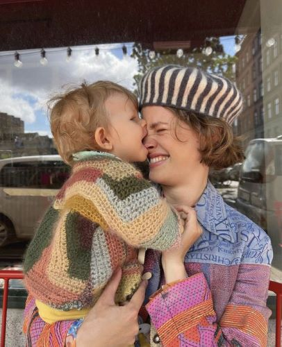
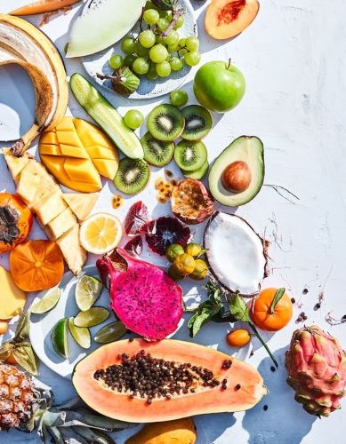
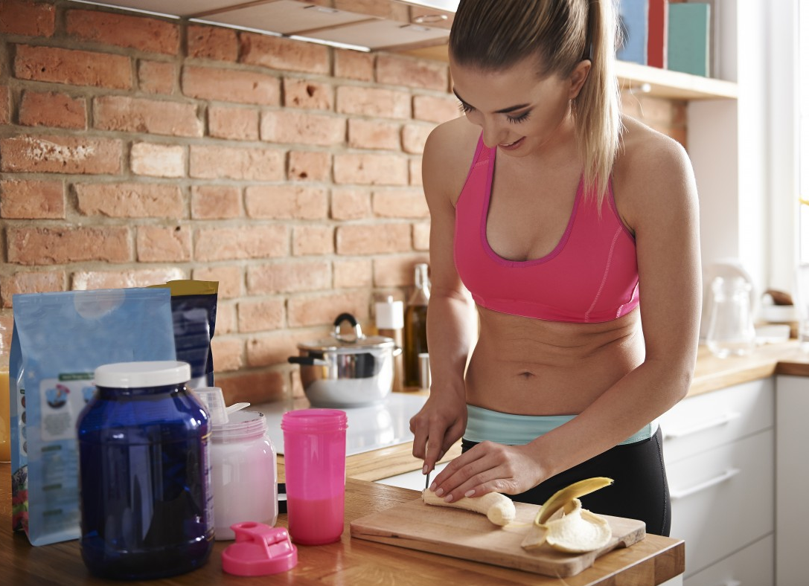
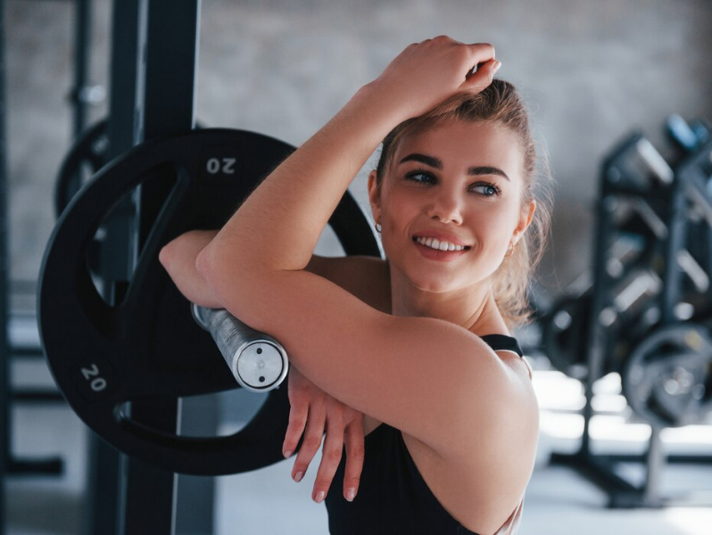
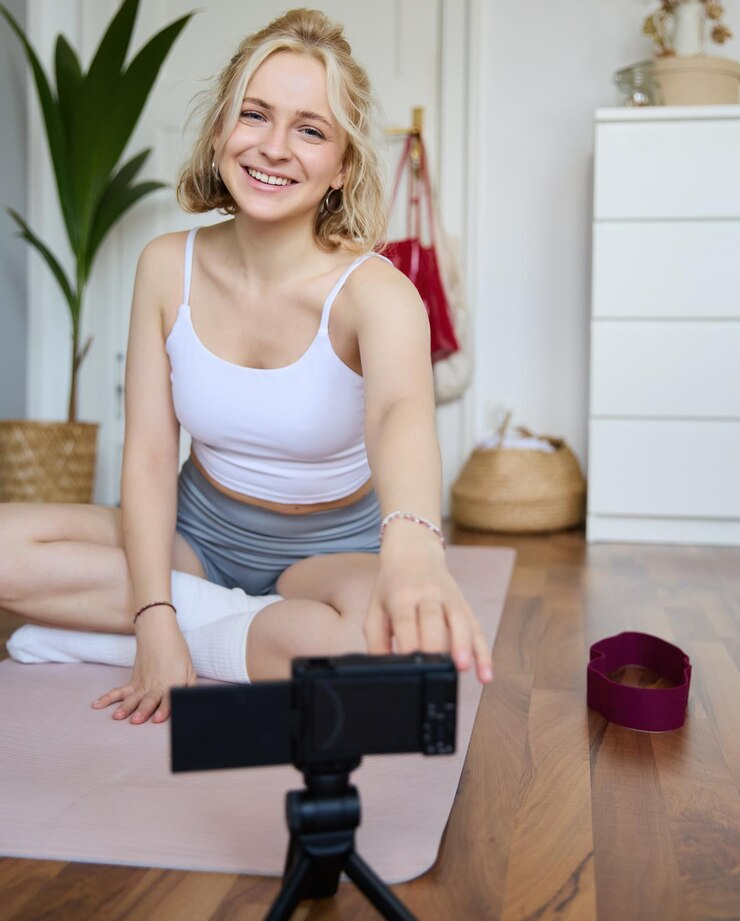
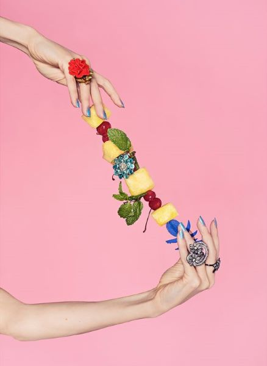

"Som en social nybagt mor på barsel giver Joy & the Juice mig en mulighed
for at blive en del af et fællesskab hvor vi både kan dele viden om moderskabet.
Samtidig er det også fedt man kan få lov at udfolde sig kreativt
eller få tilegnet sig en større viden mens man drikker en masse lækre juice til de forskellige events!"

Ingrediensernes Sundhedsfordele - din Juiceguide som giver dig en bredere viden og forståelse for
hvad de rette ingredienser kan gøre for netop dig og din krop

Få en sund livsstil uden at det behøver at gå udover din "Joy" i hverdagen. I dette indlæg får du en masse tips og tricks til hvordan
du i din hverdag kan tilføje små sunde stunder og ritualer, som hverken er tidskrævende eller uoverkommelige -
og som selvfølgelig også byder på en masse lækre juice!

Optimér din træning med juice og se hurtigere resultater!
Opdag, hvordan den rigtige juice kan forbedre din restitution,
øge energiniveauerne og levere essentielle næringsstoffer til dine muskler.

Mød Joys ambassadører og hør dem fortælle om hvorfor de har valgt at blive repræsentanter for netop Joy & the Juice.
Her har du også muligheden for at stille vores ambassadøre egnede spørgsmål i vores spørgsmål og svar-sektion!

Joy & the Juice - en konceptudvidelse til kvinder ønsket af kvinder.
Her får du fortællingen omkring tilblivelsen af Joy & the Juice og dets koncept, mål og værdier.